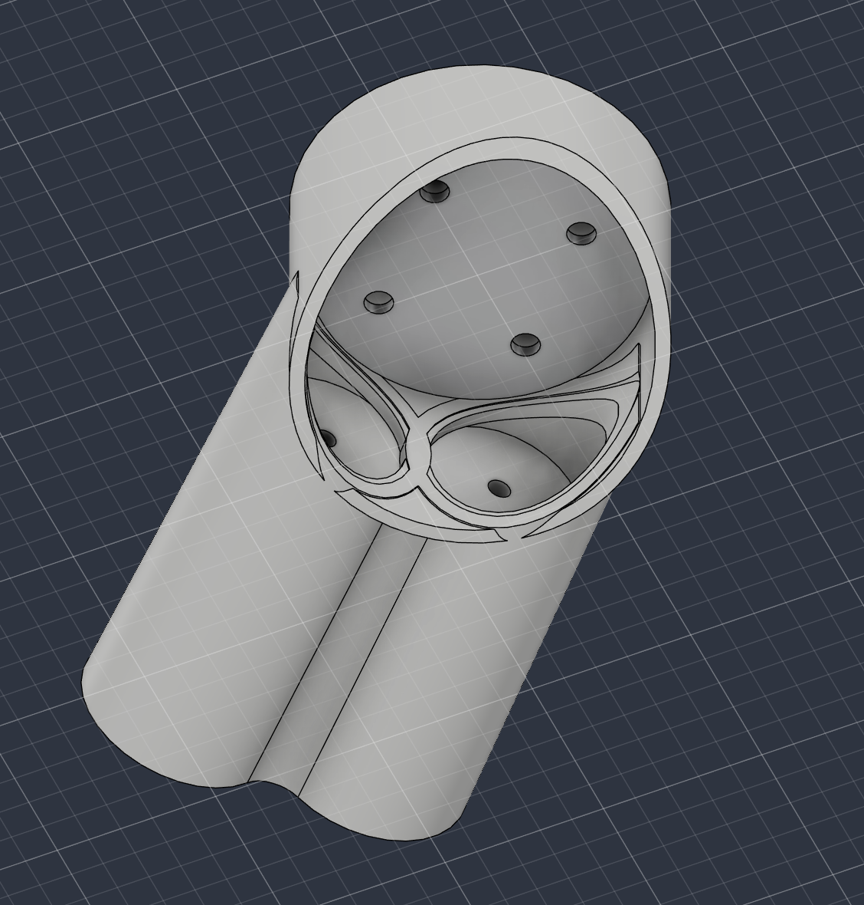
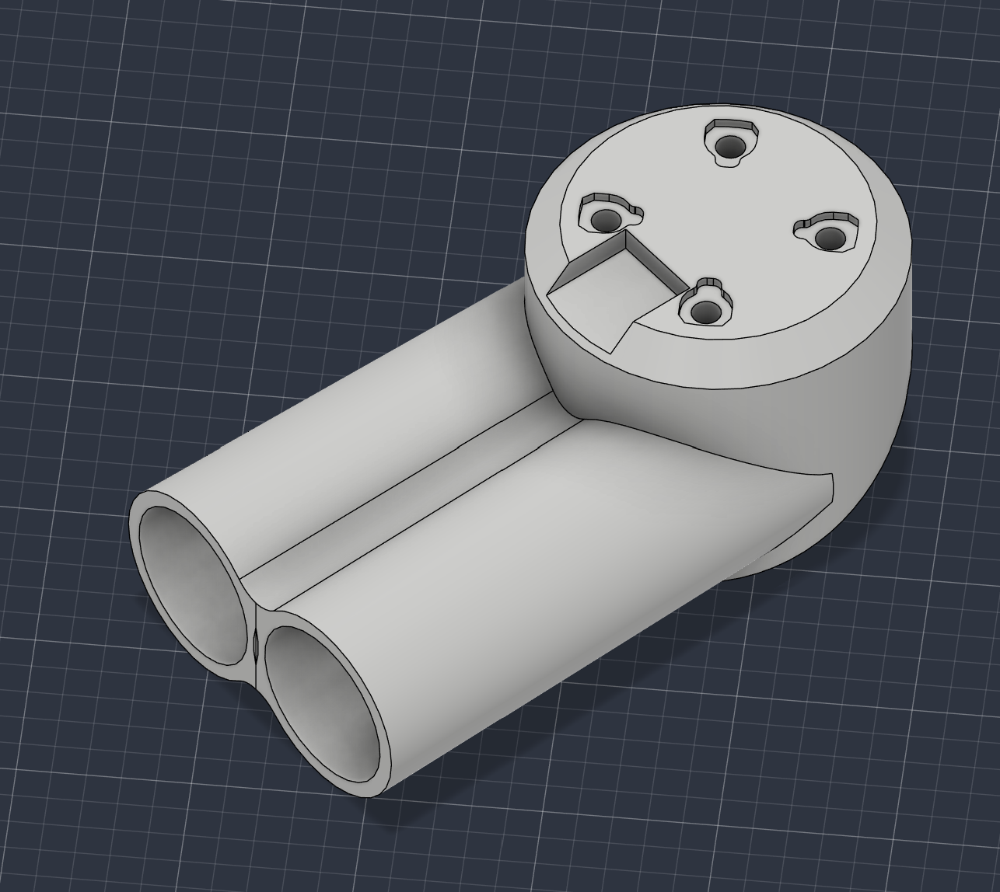
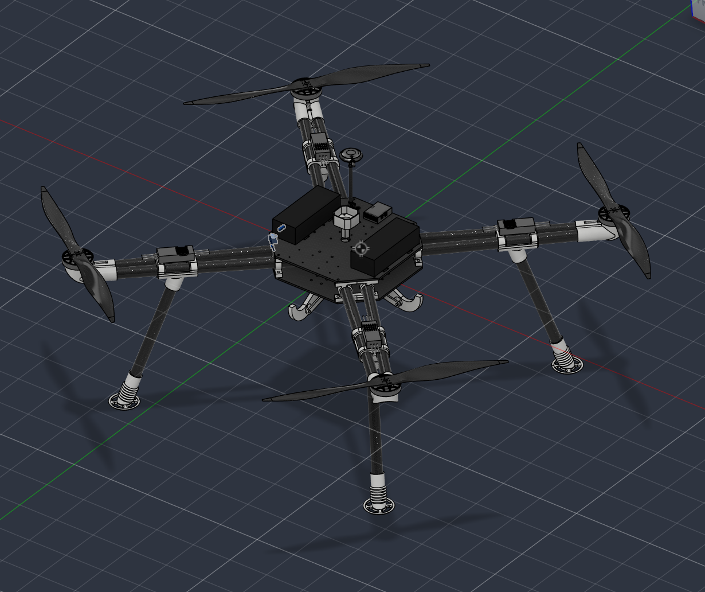
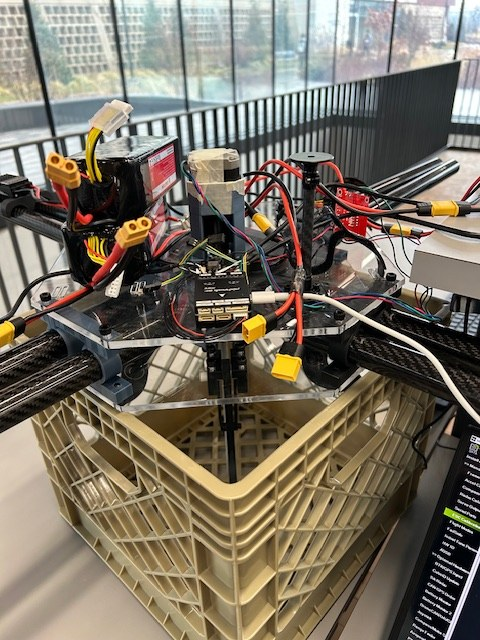
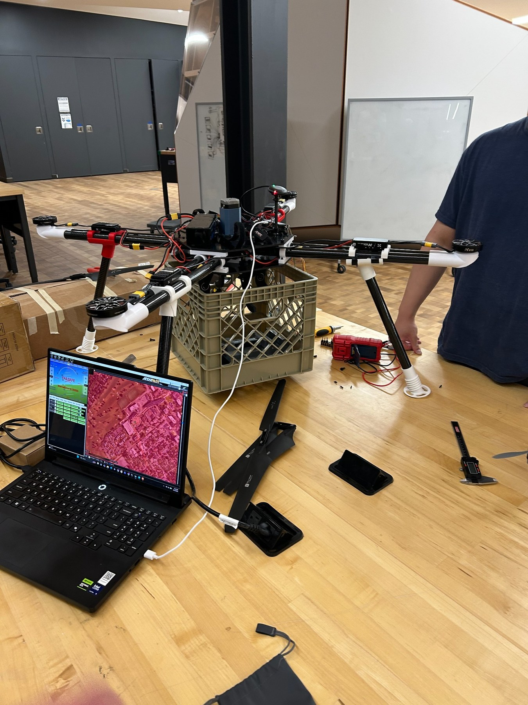
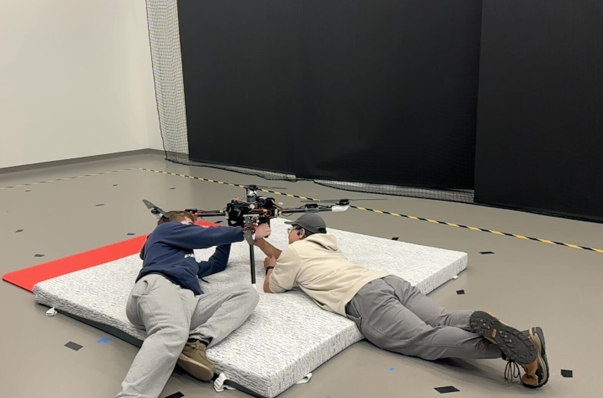

02 / Team project
ASME Package-Delivery Drone
A two-semester team project with a $1,000 budget and a 25 lb payload design challenge.

Overview
The ASME design team set out to design and build a drone capable of carrying, picking up, and releasing a 25 lb package within a $1,000 budget. Over two semesters, the project progressed from CAD and subsystem development through manufacturing, assembly, bench testing, and indoor flight testing. The completed drone successfully met the project objective and demonstrated the ability to pick up a 40 lb load.
My role
I designed the carbon fiber arm and motor-mount subsystem and served as Manufacturing Lead for the team. My manufacturing responsibilities included 3D printing, cutting carbon fiber components, and abrasive waterjet cutting aluminum parts.
Arm & motor-mount design
My subsystem work focused on the carbon fiber arms and their motor mounts. The primary design challenge was creating a mount that could clamp securely to the arm while maintaining access to the motor mounting screws and avoiding holes through the carbon fiber.
The final design used an expanding insert inside the carbon fiber arm. Tightening the screw expanded the insert against the inside of the arm, creating a friction fit that secured the motor mount without drilling through the carbon fiber. This preserved the structural properties of the arm while allowing the motor mount to remain a single piece.



Manufacturing
As Manufacturing Lead, I coordinated and performed manufacturing work across the build, including 3D printing, carbon fiber cutting, and abrasive waterjet cutting of aluminum components.

Testing & Flight
Testing progressed from bench-level motor checks to full-system indoor flight testing and payload trials. Motor testing was used to verify operation before the assembled drone was moved into the netted indoor flight area. The completed system successfully met the project objective and demonstrated pickup of a 40 lb load, exceeding the original 25 lb payload target.

